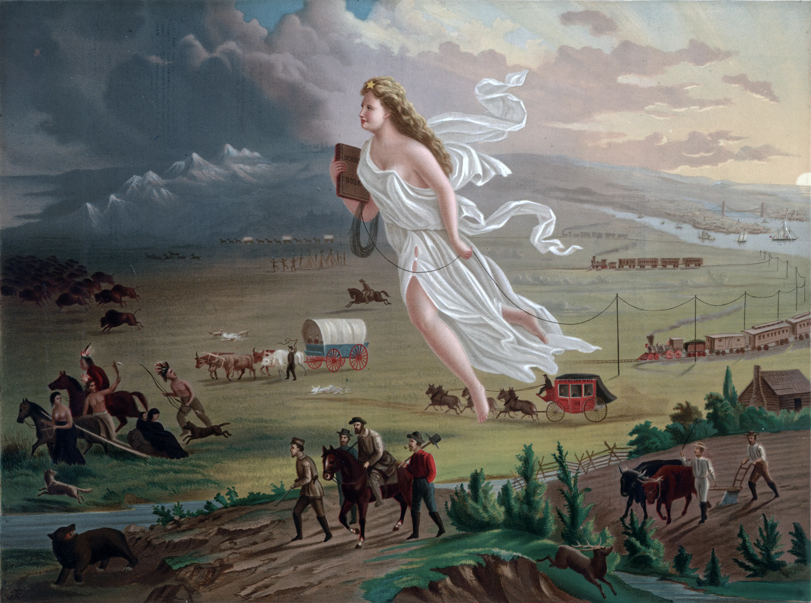
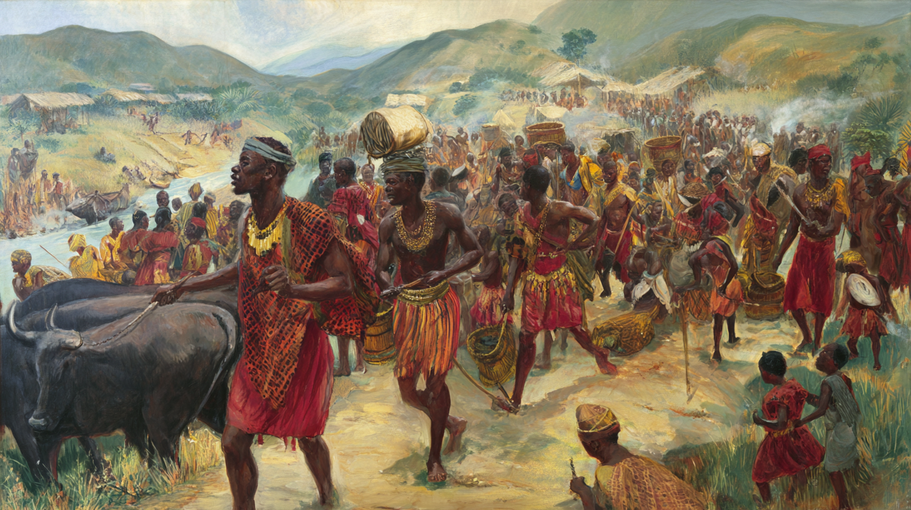
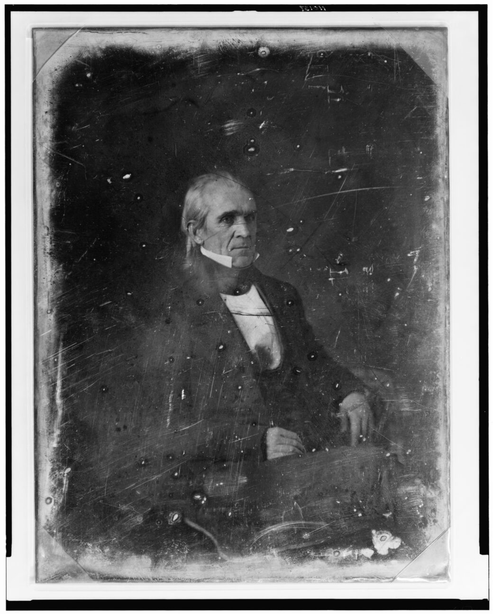

How the United States Transformed from a Young Republic to Continental Power
Democrats Pushed; Whigs Resisted
HIST 101 • 1783–1853
Visual Evidence: John Gast's American Progress (1872)

Sea to Shining Sea
Staggering Transformation
Fastest geographic expansion of any Western republic ever
Central Thesis
Success in territorial expansion created fatal political division over slavery
Resulted from a Powerful Combination of:
- Divine destiny
- Population growth
- Military conquest
- Decisive leadership
- Political compromises
Global Context: A Universal Pattern
Before examining American expansion, recognize a pattern repeating across continents and millennia:
A technologically or demographically stronger group claims a divine or civilizational mandate to "improve" land already in use by indigenous peoples.
Japanese displace the Ainu
(~3rd century CE–1912)
Viet Push Champa and Khmer South
("Southward Advance," 10th–19th centuries)
Bantu Migrations displaced Khoisan
(Southern Africa, ~300–1800 CE)

Common Threads Across All Examples
- Divine right, racial superiority, or "civilizing mission"
- Demographic swamping via mass migration
- Legal fictions: treaties, purchases, declarations of emptiness
- Violence + disease as force multipliers
- Long-term assimilation/erasure of indigenous cultures
Pivot Statement: The United States is not the origin of this process: speed, democratic-republic, media-amplification, industrial scale, and legal sophistication are the only difference.
The "Civilizing Mission"
A justification for colonization claiming that the colonizing power has a duty to bring "civilization," education, religion, or superior institutions to "backward" peoples.
Examples across cultures:
- Japanese: Bringing Yamato culture to Ainu "barbarians"
- Vietnamese: Spreading Confucian learning to Hindu Champa
- French: "Mission civilisatrice" in Africa and Asia
- British: "White Man's Burden" in India and Africa
- American: Spreading republican institutions and Christianity
Critical note: This rhetoric was used to justify dispossession, cultural destruction, and violence while framing it as beneficial to the colonized.
Thinking Historically: Context vs. Presentism
Critical Framework:
Contextualization is disciplined empathy; presentism is undisciplined certainty.
Understanding historical actors, events, and ideas within their own time period, considering the beliefs, knowledge, values, and constraints they operated under.
"The past is a foreign country; they do things differently there."
Contextualization
Definition: Understanding historical actors, events, and ideas within their own time period, considering the beliefs, knowledge, values, and constraints they operated under.
Why it matters:
- Prevents judging past people by present-day moral standards they couldn't have known
- Helps us understand why historical actors made choices that seem incomprehensible today
- Allows us to see change over time—how ideas that were once "common sense" became unacceptable
- Doesn't mean approving of past actions—just understanding them on their own terms first
Example: Understanding that 1840s Americans widely accepted stadial theory and racial hierarchies helps us see how they justified expansion. We can then analyze and critique those justifications—but only after we understand them.
Presentism
Definition: The anachronistic introduction of present-day ideas, perspectives, and moral standards into depictions of the past.
Why it's problematic:
- Prevents understanding historical change—if the past is judged only by present standards, we can't see how ideas evolved
- Creates "heroes and villains" rather than understanding complex human beings
- Flattens history into simple morality tales rather than analyzing causes and consequences
- Makes us miss important patterns by focusing only on moral judgment
Note: Avoiding presentism doesn't mean we can't make moral judgments about the past—but those judgments should come AFTER understanding, not instead of it.
Reframing the National Mission
In the decade following 1845, the United States underwent a transformation that redefined the scope of the American Republic.
Three Interlocking Realities:
- Demographic pressure: Population doubling every 25 years
- Institutional superiority: Confidence in republican government
- Providential duty: Divine mandate for expansion
Justifications for Westernward Expansion
How Americans in the 1840s understood their mission
1. Providential Allotment (Divine Destiny)
North American continent providentially allotted to the U.S. for free development of its multiplying millions under Anglo-Saxon republican government.
God's plan specifically designated this land for Anglo-Saxons.
×
Anglo-Saxon Racial Theory (1840s)
In the 1840s, "Anglo-Saxon" referred to people of English descent and their institutions—particularly common law, Protestant Christianity, and representative government.
Key beliefs:
- Anglo-Saxons possessed unique capacity for self-government and liberty
- Anglo-Saxon institutions were superior to other systems
- Anglo-Saxon "race" had a duty to spread these institutions globally
- This was understood as both racial and cultural superiority
Modern understanding: These beliefs are now recognized as racist ideology that rationalized conquest and dispossession.
2. Demographic Imperative (Population Pressure)
1820
9.6 million
1840
17.1 million (78% increase)
1850
23.2 million (36% increase)
1860
31.4 million (35% increase)
The Problem: Human tide pressing against boundaries
The Solution: Land need for demographic safety valve preventing overcrowding, class conflict, and stagnation
3. Anglo-Saxon Racial Mission
Consensus belief: Anglo-Saxon race and their institutions uniquely suited to liberty, law, and progress.
Cultural and racial beliefs in the 19th justified displacing "inferior systems"
4. Ethical Exceptionalism (Moral Superiority)
“The people of these States are the most free, the most enlightened, and the most happy people on the face of the whole globe.”
— James K. Polk, Inaugural Address, March 4, 1845
- Press, pulpit, and schools proclaimed superiority
- Expansion viewed as ethical act benefiting humanity
- Spreading superior institutions was seen as a moral duty to mankind
- Self-reinforcing: Success proved righteousness
5. Anti-Centralization
Democrats championed expansion to empower farmers and new states, diluting federal control by Eastern elites.
- Distant states dilute federal influence, prevent "consolidation"
- Opposes Whig American System (national bank, tariffs, internal improvements)
- Expansion as a constitutional safeguard for state sovereignty
- More states mean more checks on federal overreach
6. Economic Rationalism (Land as Wealth Engine)
Core Argument: Land equals opportunity and wealth
- Land needed for yeoman farmers, entrepreneurs, speculators
- Mexican Cession = "richest territory on earth" (gold, farmland, ports)
- $15M for 525,000 square miles
Whig Opposition: Moral Restraint in an Age of Conquest
Who Were the Whigs?
- Founded 1834 — anti-Jackson coalition
- Leaders: Henry Clay, Daniel Webster, young Abraham Lincoln
- Core belief: Strong federal government for national improvement
- “American System”: bank, tariffs, internal improvements
- Social vision: moral progress through institutions, not conquest
Opposition to Aggressive Expansion
- Indian Removal Act (1830): Clay voted against — called it “cruel and unjust”
- Mexican-American War (1846–48): Lincoln’s “Spot Resolutions” demanded proof of U.S. soil
- Feared war would spread slavery, inflate debt, weaken federal legitimacy
- Believed in elevation over expulsion: Natives & Mexicans could be “civilized”
“Not all who believed in progress believed in plunder.”
— A Whig conscience in a Jacksonian age
Legal Framework: Doctrine of Discovery
Definition: An international legal principle originating in 15th-century papal bulls and European traditions that automatically provided Europeans with property rights and governmental, political, and commercial rights over indigenous inhabitants without their consent.
Basis: Religious and ethnocentric ideas of European and Christian superiority
American Continuity: Manifest Destiny was the natural outgrowth of this doctrine
Current Status: Still cited in U.S. federal law today
10 Elements of the Doctrine of Discovery
1. First Discovery
First European to “see” land gains claim.
2. Actual Occupancy
Must settle or fortify within reasonable time.
3. Preemption
Government monopoly on Native land sales.
4. Indian Title
Natives keep use, but not full ownership.
5. Limited Sovereignty
Tribes = “domestic dependent nations.”
6. Contiguity
River mouth = claim to entire watershed.
7. Christianity
Non-Christians = lesser land rights.
8. Terra Nullius
“Empty” if not farmed European-style.
9. Civilization
Duty to “civilize” = justify control.
10. Conquest
Military victory = full legal title.
×First Discovery
First European nation to “discover” land gains inchoate title — even if indigenous people lived there for millennia. Example: Cabot (1497) → England claims Atlantic coast.
×Actual Occupancy
Discovery must be followed by physical presence — forts, settlements, patrols — within “reasonable time.” Lewis & Clark (1804–06) = U.S. occupancy in Oregon.
×Preemption
Only the discovering government can buy from Natives. No private sales. U.S. law (1790s): Individuals buying from tribes = illegal.
×Indian Title
Natives have right of occupancy, but ultimate title belongs to U.S. Marshall (1823): “They are occupants… we hold dominion.”
×Limited Sovereignty
Tribes = “domestic dependent nations” — can govern internally, but not sell land or ally with foreign powers. Cherokee Nation v. Georgia (1831).
×Contiguity
Discovering a river mouth = claim to entire watershed. France (1682): Mississippi mouth → all interior. U.S. (1792): Columbia River → Oregon.
×Terra Nullius
“Empty land” if not used via European agriculture. Hunting, migration, spiritual use = invisible. Great Plains = “waste” despite buffalo economy.
×Christianity
Non-Christians have inferior rights. Rooted in 15th-century papal bulls. Missionaries = legal agents of conquest.
×Civilization
God commands “civilized” to educate and control “savages.” Paternalism = moral duty. “For their own good.”
×Conquest
Military victory = full legal title. No treaty needed. Mexican Cession (1848), Indian Wars.
Click any term for full definition & historical example.
Early U.S. Application: The Oregon Strategy
Thomas Jefferson's Strategic Use of the Doctrine:
- Dispatched Lewis & Clark Expedition (1803–1806) as legal maneuver
- Built on Robert Gray's 1792 Columbia River discovery
- Post-War of 1812 rituals at Astoria reinforced occupancy
Jefferson understood that physical possession converted incomplete discovery into complete title under the Doctrine's principles.
Ideological Underpinnings: Coining "Manifest Destiny"
"...our manifest destiny to overspread the continent allotted by Providence for the free development of our yearly multiplying millions."
— John L. O'Sullivan, United States Magazine and Democratic Review, 1845
Key Innovation: Destiny trumps international law—moral imperative supersedes legal technicalities.
Three Core Tenets of Manifest Destiny
1. American Exceptionalism
Moral Virtue & Superior Institutions
- Traces to Puritan “City upon a Hill” (1630)
- Stable government, economic growth, social mobility
- Religious freedom, mass literacy
- Polk (1845): “The most free, enlightened, and happy people on the globe”
2. Republican Mission
Duty to Spread Liberty
- Expand self-government, law, and commerce
- Replace instability with ordered republics
- Not conquest — rescue from tyranny & chaos
- Mexico: 30 coups in 25 years → U.S. offers stability
3. Divine Guidance
Destiny Ordained by God
- Continent = “vast theater” for republican experiment
- Geography (rivers, soil) proves divine design
- Opposition = defying Providence
- Success = proof of righteousness
Stadial Theory: The “Science” of Progress
4 Stages of Society
- 1. Savagery: Hunting and gathering (nomadic existence, no fixed property)
- 2. Barbarism: Pastoralism (tribes, herding societies)
- 3. Agriculture: Settled farming (fixed land tenure, villages)
- 4. Civilization: Commerce (trade and manufacturing, written law, republican institutions)
Americans believed:
By 1848, Americans looked at their track record and saw overwhelming evidence of Stage 4 achievement.
- Higher stages naturally replace lower ones
- Not conquest — progress
- Like water flows downhill
This idea was in every textbook, newspaper, and sermon. It wasn’t fringe — it was common sense.
Stadial Theory in Action: Replacement vs. Elevation
Democrats: Progress through Replacement
- Stage 4 must replace Stage 1
- Hunters represent "waste"
- War and removal constitute natural law
“The hunter state can never coexist with the agricultural… one must give way.”
— Sen. Thomas Hart Benton, May 28, 1846
Whigs: Progress through Elevation
- Stage 1 can advance to Stage 4
- Hunters possess "potential"
- Education and treaties fulfill moral duty
“The hunter and warrior of the forest must yield to the more dense and compact form of civilized life.”
— Abraham Lincoln, January 27, 1838
Both accepted stadial theory — disagreed on how to apply it.
Presidential Leadership: James K. Polk
Polk’s Four Goals — All Achieved
- Texas Annexation (1845)
- Oregon Settlement (1846)
- California & Southwest (1848)
- Lower Tariff (Walker Tariff, 1846)
Added 1.2 million sq mi — second only to Jefferson
Whig Critique:
“Polk provoked an unnecessary war on foreign soil to steal land for slavery.”
— Abraham Lincoln, “Spot Resolutions,” 1848

Agent of Destiny — or Architect of War?
Mexican-American War: Polk’s War of Choice
Context: Polk’s Provocation
- Texas border dispute (Nueces vs. Rio Grande)
- Polk sent troops to disputed zone
- April 1846: “American blood on American soil”
- Congress declared war in 48 hours
Democrat Justification
“Mexico has invaded our territory and shed American blood upon American soil.”
— James K. Polk, May 11, 1846
“The mountain plains of the Aztecs… shall yet become the abode of a free and enlightened people, under the banners of the stars and stripes.”
— Caleb Cushing, 1847
“The war with Mexico is a war of necessity… to extend the area of freedom and republican institutions.”
— Lewis Cass, February 1847
“American blood on American soil” — but whose soil?
Whig Opposition to the War
Core Whig Charge: The Mexican War was unnecessary, unconstitutional, and ruinously expensive—a Democratic land-grab to extend slavery.
⚖️ Constitutional Objection
- War declared without Congressional vote (Polk’s “spot” pretext)
- Lincoln’s Spot Resolutions (1847): “Show us the spot!”
💰 Fiscal Objection
- War cost ~$100M—3× annual federal budget
- Whigs: “Money for canals, not conquest!”
🪦 Moral Objection
- “A war to plant slavery on free soil” — Henry Clay, 1847
- Northern Whigs: “Blood money for slave pens”
Whig Warning: “This War Will Tear Us Apart”
“Allow the President to extend slavery into these territories, and you plant the seeds of civil war.”
— John Quincy Adams, 1846
- Wilmot Proviso (1846): Whig/Democrat alliance to ban slavery in new lands
- 1848 Election: Whigs run on “No More Territory for Slavery”
- Result: Party splits → Rise of Free Soil → Republicans
The war cost more than money—it cost the Union.
Treaty of Guadalupe Hidalgo (1848)
Territorial Gains
- 525,000 square miles ceded by Mexico
- Combined with Texas and Gadsden Purchase = >1 million total
Protections for Mexicans
- Property rights protected
- U.S. citizenship offered
- Religious freedom guaranteed
Native American Land Acquisitions
Scale (1830–1850): Over 100 million acres ceded via treaties
Legal Framework
-
Based on Doctrine of Discovery’s preemption right
-
Treaty Record (1789–1871):Over 370 treaties signed
Why It Was Legal
-
Recognized tribal sovereignty
(treaties = agreements between sovereign entities)
-
Provided compensation
annuities, reservations, relocation assistance
-
Treaties enforceable as federal law
under Supremacy Clause
But Was it Theft? 
Explicit Contemporary Statements
"Advised Congress that American expansion would cause the 'Savage as the Wolf to retire.'"
— George Washington, 1783
In his 1846 Senate speech on Oregon annexation, Thomas Hart Benton addressed the fate of tribes resisting expansion: "The Red race has disappeared from the Atlantic coast: the tribes that resisted civilization met extinction. This is a cause of lamentation with many. For my part, I cannot murmur at what seems to be the effect of divine law... Moral and intellectual superiority will do the rest: the White race will take the ascendant."
— Senator Thomas Hart Benton, Congressional Globe, 29:1 (May 28, 1846), 917–918
Critical Reality: The expansion was specifically anticipated and intended to be a disaster for the legal, cultural, economic, and political rights of Indian nations and native peoples.
The Human Cost & Consequences
Achievement
- Rapid institutional transplantation
- California statehood in 9 months
- Economic opportunity for millions
- Continental republic secured
Failure
- Political unity impossible
- Slavery made cohesion unsustainable
- Seeds of disunion sown
- Led directly to Civil War
Conclusion: Transformation Complete
1783
Atlantic republic
- Vulnerable
- Coastal
- 13 states
1853
Continental federation
- Secure
- Coast-to-coast
- 31 states
Tools of Transformation:
Treaties • Plows • Ballots • and Guns!
North American continent providentially allotted to the U.S. for free development of its multiplying millions under Anglo-Saxon republican government.
God's plan specifically designated this land for Anglo-Saxons.
Anglo-Saxon Racial Theory (1840s)
In the 1840s, "Anglo-Saxon" referred to people of English descent and their institutions—particularly common law, Protestant Christianity, and representative government.
Key beliefs:
- Anglo-Saxons possessed unique capacity for self-government and liberty
- Anglo-Saxon institutions were superior to other systems
- Anglo-Saxon "race" had a duty to spread these institutions globally
- This was understood as both racial and cultural superiority
Modern understanding: These beliefs are now recognized as racist ideology that rationalized conquest and dispossession.
2. Demographic Imperative (Population Pressure)
The Problem: Human tide pressing against boundaries
The Solution: Land need for demographic safety valve preventing overcrowding, class conflict, and stagnation
3. Anglo-Saxon Racial Mission
Consensus belief: Anglo-Saxon race and their institutions uniquely suited to liberty, law, and progress.
Cultural and racial beliefs in the 19th justified displacing "inferior systems"
4. Ethical Exceptionalism (Moral Superiority)
“The people of these States are the most free, the most enlightened, and the most happy people on the face of the whole globe.”
- Press, pulpit, and schools proclaimed superiority
- Expansion viewed as ethical act benefiting humanity
- Spreading superior institutions was seen as a moral duty to mankind
- Self-reinforcing: Success proved righteousness
5. Anti-Centralization
Democrats championed expansion to empower farmers and new states, diluting federal control by Eastern elites.
- Distant states dilute federal influence, prevent "consolidation"
- Opposes Whig American System (national bank, tariffs, internal improvements)
- Expansion as a constitutional safeguard for state sovereignty
- More states mean more checks on federal overreach
6. Economic Rationalism (Land as Wealth Engine)
Core Argument: Land equals opportunity and wealth
- Land needed for yeoman farmers, entrepreneurs, speculators
- Mexican Cession = "richest territory on earth" (gold, farmland, ports)
- $15M for 525,000 square miles
Whig Opposition: Moral Restraint in an Age of Conquest
Who Were the Whigs?
- Founded 1834 — anti-Jackson coalition
- Leaders: Henry Clay, Daniel Webster, young Abraham Lincoln
- Core belief: Strong federal government for national improvement
- “American System”: bank, tariffs, internal improvements
- Social vision: moral progress through institutions, not conquest
Opposition to Aggressive Expansion
- Indian Removal Act (1830): Clay voted against — called it “cruel and unjust”
- Mexican-American War (1846–48): Lincoln’s “Spot Resolutions” demanded proof of U.S. soil
- Feared war would spread slavery, inflate debt, weaken federal legitimacy
- Believed in elevation over expulsion: Natives & Mexicans could be “civilized”
“Not all who believed in progress believed in plunder.”
— A Whig conscience in a Jacksonian age
Legal Framework: Doctrine of Discovery
Definition: An international legal principle originating in 15th-century papal bulls and European traditions that automatically provided Europeans with property rights and governmental, political, and commercial rights over indigenous inhabitants without their consent.
Basis: Religious and ethnocentric ideas of European and Christian superiority
American Continuity: Manifest Destiny was the natural outgrowth of this doctrine
Current Status: Still cited in U.S. federal law today
10 Elements of the Doctrine of Discovery
1. First Discovery
First European to “see” land gains claim.
2. Actual Occupancy
Must settle or fortify within reasonable time.
3. Preemption
Government monopoly on Native land sales.
4. Indian Title
Natives keep use, but not full ownership.
5. Limited Sovereignty
Tribes = “domestic dependent nations.”
6. Contiguity
River mouth = claim to entire watershed.
7. Christianity
Non-Christians = lesser land rights.
8. Terra Nullius
“Empty” if not farmed European-style.
9. Civilization
Duty to “civilize” = justify control.
10. Conquest
Military victory = full legal title.
First Discovery
First European nation to “discover” land gains inchoate title — even if indigenous people lived there for millennia. Example: Cabot (1497) → England claims Atlantic coast.
Actual Occupancy
Discovery must be followed by physical presence — forts, settlements, patrols — within “reasonable time.” Lewis & Clark (1804–06) = U.S. occupancy in Oregon.
Preemption
Only the discovering government can buy from Natives. No private sales. U.S. law (1790s): Individuals buying from tribes = illegal.
Indian Title
Natives have right of occupancy, but ultimate title belongs to U.S. Marshall (1823): “They are occupants… we hold dominion.”
Limited Sovereignty
Tribes = “domestic dependent nations” — can govern internally, but not sell land or ally with foreign powers. Cherokee Nation v. Georgia (1831).
Contiguity
Discovering a river mouth = claim to entire watershed. France (1682): Mississippi mouth → all interior. U.S. (1792): Columbia River → Oregon.
Terra Nullius
“Empty land” if not used via European agriculture. Hunting, migration, spiritual use = invisible. Great Plains = “waste” despite buffalo economy.
Christianity
Non-Christians have inferior rights. Rooted in 15th-century papal bulls. Missionaries = legal agents of conquest.
Civilization
God commands “civilized” to educate and control “savages.” Paternalism = moral duty. “For their own good.”
Conquest
Military victory = full legal title. No treaty needed. Mexican Cession (1848), Indian Wars.
Click any term for full definition & historical example.
Early U.S. Application: The Oregon Strategy
Thomas Jefferson's Strategic Use of the Doctrine:
- Dispatched Lewis & Clark Expedition (1803–1806) as legal maneuver
- Built on Robert Gray's 1792 Columbia River discovery
- Post-War of 1812 rituals at Astoria reinforced occupancy
Jefferson understood that physical possession converted incomplete discovery into complete title under the Doctrine's principles.
Ideological Underpinnings: Coining "Manifest Destiny"
"...our manifest destiny to overspread the continent allotted by Providence for the free development of our yearly multiplying millions."
Key Innovation: Destiny trumps international law—moral imperative supersedes legal technicalities.
Three Core Tenets of Manifest Destiny
1. American Exceptionalism
Moral Virtue & Superior Institutions
- Traces to Puritan “City upon a Hill” (1630)
- Stable government, economic growth, social mobility
- Religious freedom, mass literacy
- Polk (1845): “The most free, enlightened, and happy people on the globe”
2. Republican Mission
Duty to Spread Liberty
- Expand self-government, law, and commerce
- Replace instability with ordered republics
- Not conquest — rescue from tyranny & chaos
- Mexico: 30 coups in 25 years → U.S. offers stability
3. Divine Guidance
Destiny Ordained by God
- Continent = “vast theater” for republican experiment
- Geography (rivers, soil) proves divine design
- Opposition = defying Providence
- Success = proof of righteousness
Stadial Theory: The “Science” of Progress
4 Stages of Society
- 1. Savagery: Hunting and gathering (nomadic existence, no fixed property)
- 2. Barbarism: Pastoralism (tribes, herding societies)
- 3. Agriculture: Settled farming (fixed land tenure, villages)
- 4. Civilization: Commerce (trade and manufacturing, written law, republican institutions)
Americans believed:
By 1848, Americans looked at their track record and saw overwhelming evidence of Stage 4 achievement.
- Higher stages naturally replace lower ones
- Not conquest — progress
- Like water flows downhill
This idea was in every textbook, newspaper, and sermon. It wasn’t fringe — it was common sense.
Stadial Theory in Action: Replacement vs. Elevation
Democrats: Progress through Replacement
- Stage 4 must replace Stage 1
- Hunters represent "waste"
- War and removal constitute natural law
“The hunter state can never coexist with the agricultural… one must give way.”
— Sen. Thomas Hart Benton, May 28, 1846
Whigs: Progress through Elevation
- Stage 1 can advance to Stage 4
- Hunters possess "potential"
- Education and treaties fulfill moral duty
“The hunter and warrior of the forest must yield to the more dense and compact form of civilized life.”
— Abraham Lincoln, January 27, 1838
Both accepted stadial theory — disagreed on how to apply it.
Presidential Leadership: James K. Polk
Polk’s Four Goals — All Achieved
- Texas Annexation (1845)
- Oregon Settlement (1846)
- California & Southwest (1848)
- Lower Tariff (Walker Tariff, 1846)
Added 1.2 million sq mi — second only to Jefferson
Whig Critique:
“Polk provoked an unnecessary war on foreign soil to steal land for slavery.”
— Abraham Lincoln, “Spot Resolutions,” 1848

Agent of Destiny — or Architect of War?
Mexican-American War: Polk’s War of Choice
Context: Polk’s Provocation
- Texas border dispute (Nueces vs. Rio Grande)
- Polk sent troops to disputed zone
- April 1846: “American blood on American soil”
- Congress declared war in 48 hours
Democrat Justification
“Mexico has invaded our territory and shed American blood upon American soil.”
— James K. Polk, May 11, 1846
“The mountain plains of the Aztecs… shall yet become the abode of a free and enlightened people, under the banners of the stars and stripes.”
— Caleb Cushing, 1847
“The war with Mexico is a war of necessity… to extend the area of freedom and republican institutions.”
— Lewis Cass, February 1847
“American blood on American soil” — but whose soil?
Whig Opposition to the War
Core Whig Charge: The Mexican War was unnecessary, unconstitutional, and ruinously expensive—a Democratic land-grab to extend slavery.
⚖️ Constitutional Objection
- War declared without Congressional vote (Polk’s “spot” pretext)
- Lincoln’s Spot Resolutions (1847): “Show us the spot!”
💰 Fiscal Objection
- War cost ~$100M—3× annual federal budget
- Whigs: “Money for canals, not conquest!”
🪦 Moral Objection
- “A war to plant slavery on free soil” — Henry Clay, 1847
- Northern Whigs: “Blood money for slave pens”
Whig Warning: “This War Will Tear Us Apart”
“Allow the President to extend slavery into these territories, and you plant the seeds of civil war.”
— John Quincy Adams, 1846
- Wilmot Proviso (1846): Whig/Democrat alliance to ban slavery in new lands
- 1848 Election: Whigs run on “No More Territory for Slavery”
- Result: Party splits → Rise of Free Soil → Republicans
The war cost more than money—it cost the Union.
Treaty of Guadalupe Hidalgo (1848)
Territorial Gains
- 525,000 square miles ceded by Mexico
- Combined with Texas and Gadsden Purchase = >1 million total
Protections for Mexicans
- Property rights protected
- U.S. citizenship offered
- Religious freedom guaranteed
Native American Land Acquisitions
Scale (1830–1850): Over 100 million acres ceded via treaties
Legal Framework
- Based on Doctrine of Discovery’s preemption right
- Treaty Record (1789–1871):Over 370 treaties signed
Why It Was Legal
-
Recognized tribal sovereignty
(treaties = agreements between sovereign entities) -
Provided compensation
annuities, reservations, relocation assistance -
Treaties enforceable as federal law
under Supremacy Clause
But Was it Theft?
Explicit Contemporary Statements
"Advised Congress that American expansion would cause the 'Savage as the Wolf to retire.'"
In his 1846 Senate speech on Oregon annexation, Thomas Hart Benton addressed the fate of tribes resisting expansion: "The Red race has disappeared from the Atlantic coast: the tribes that resisted civilization met extinction. This is a cause of lamentation with many. For my part, I cannot murmur at what seems to be the effect of divine law... Moral and intellectual superiority will do the rest: the White race will take the ascendant."
Critical Reality: The expansion was specifically anticipated and intended to be a disaster for the legal, cultural, economic, and political rights of Indian nations and native peoples.
The Human Cost & Consequences
Achievement
- Rapid institutional transplantation
- California statehood in 9 months
- Economic opportunity for millions
- Continental republic secured
Failure
- Political unity impossible
- Slavery made cohesion unsustainable
- Seeds of disunion sown
- Led directly to Civil War
Conclusion: Transformation Complete
1783
Atlantic republic
- Vulnerable
- Coastal
- 13 states
1853
Continental federation
- Secure
- Coast-to-coast
- 31 states
Tools of Transformation:
Treaties • Plows • Ballots • and Guns!